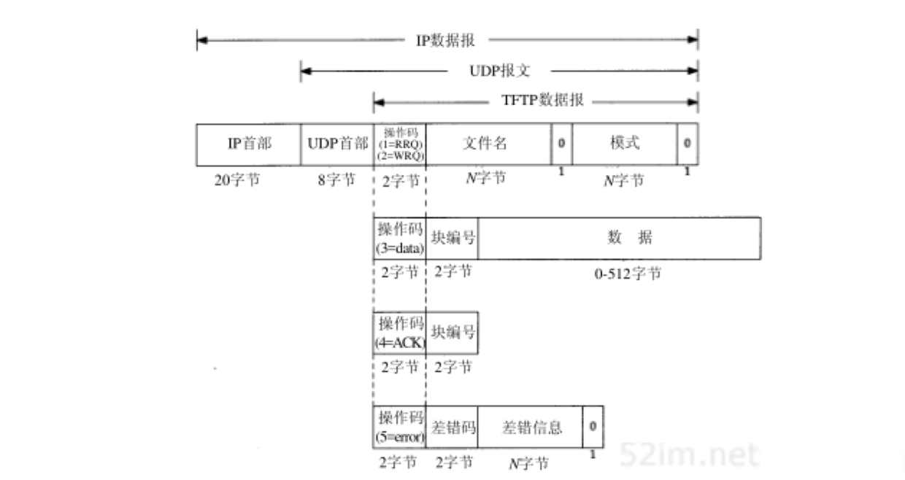
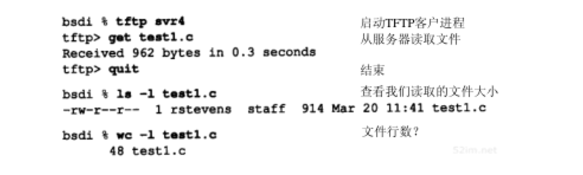

TFTP：简单文件传送协议
Table of Contents
TFTP即简单文件传送协议，最初打算用于引导无盘系统（通常是工作站或X终端）。和将FTP不同，为了保持简单和短小，TFTP将使用UDP。TFTP的代码（和它所需要的UDP、IP和设备驱动程序）都能适合只读存储器
本章对TFTP只作一般介绍，因为在下一章引导程序协议Bootstrap中还会遇到TFTP。在图5-1中，当从网络上引导sun主机时，也曾遇到过TFTP，sun主机通过RARP获得它的IP地址后，将发出一个TFTP请求
RFC 1350是第2版TFTP的正式规范
TFTP协议
在开始工作时，TFTP的客户与服务器交换信息，客户发送一个读请求或写请求给服务器。在一个无盘系统进行系统引导的正常情况下，第一个请求是读请求(RRQ)
报文
图15-1显示了5种TFTP报文格式（操作码为1和2的报文使用相同的格式）：

操作码字段
头两个字节表示操作码：
- 1: 读请求(RRQ)
- 2: 写请求(WRQ)
- 3：数据(Data)
- 4：确认(ACK)
- 5：错误(Error)
文件名字段(RRQ, WRQ)
文件名字段说明客户要读或写的位于服务器上的文件。这个文件字段以0字节作为结束
模式字段(RRQ, WRQ)
一个ASCII码串netascii或octet（可大小写任意组合），同样以0字节结束：
- netascii：数据是以成行的ASCII码字符组成，以两个字节—回车字符后跟换行字符（称为CR/LF）作为行结束符（这两个行结束字符在这种格式和本地主机使用的行定界符之间进行转化）
- octet：数据看作8bit一组的字节流而不作任何解释
块编号字段(Data, ACK)
每个数据分组包含一个块编号字段，它以后要在确认分组中使用。以读一个文件作为例子：
- TFTP客户需要发送一个读请求说明要读的文件名和文件模式
- 如果这个文件能被这个客户读取，TFTP服务器就返回一个块编号为1的数据分组
- TFTP客户又发送一个块编号为1的ACK
- TFTP服务器随后发送块编号为2的数据
- TFTP客户发回块编号为2的ACK。重复这个过程直到这个文件传送完 除了最后一个数据分组可含有不足512字节的数据，其他每个数据分组均含有512字节的数据。 当TFTP客户收到一个不足512字节的数据分组，就知道它收到最后一个数据分组
在写请求的情况下:
- TFTP客户发送WRQ指明文件名和模式
- 如果该文件能被该客户写，TFTP服务器就返回块编号为0的ACK包
- 该客户就将文件的头512字节以块编号为1发出
- 服务器则返回块编号为1的ACK
这种类型的数据传输称为 停止等待协议 。它只用在一些简单的协议如TFTP中。将看到TCP提供了不同形式的确认，能提供更高的系统吞吐量
TFTP的优点在于 实现的简单而不是高的系统吞吐量
差错码字段，差错信息字段(Error)
Tftp差错报文，它的操作码为5。它用于服务器不能处理读请求或写请求的情况。在文件传输过程中的读和写差错也会导致传送这种报文，接着停止传输：
- 差错编号字段：给出一个数字的差错码
- 差错报文字段：ASCII表示，可能包含额外的操作系统说明的信息
既然TFTP使用不可靠的UDP，TFTP就必须处理 分组丢失和分组重复 。分组丢失可通过发送方的超时与重传机制解决。和许多UDP应用程序一样，TFTP报文中没有检验和，它假定任何数据差错都将被UDP的检验和检测到
实例
通过观察协议的工作情况来了解TFTP。在bsdi主机上运行TFTP客户程序，并从主机svr4读取一个文本文件：

最先引起注意的是在Unix系统下接收的文件长度是914字节，而TFTP则传送了962个字节。使用wc程序我们看到文件共有48行，因此48个Unix的换行符被转化成48个CR/CF对，而默认情况下TFTP使用netascii模式传送
下图显示了发生的分组交换过程：
- 第1行：客户向服务器发送的读请求，由于目的UDP端口是TFTP熟知端口69，tcpdump将解释TFTP分组，并显示RRQ和文件名，19字节UDP数据：
- 2字节：操作码
- 7字节：文件名
- 1字节：0结束
- 8字节：netascii模式
- 1字节：0结束
- 第二行：由服务器发回，共包含516字节：
- 2字节：操作码
- 2字节：数据块号
- 512字节：数据
- 第3行：这个数据块的确认：
- 2字节：操作码
- 2字节：数据块号
- 第4行：最后的数据分组，包含450字节的数据。这450字节的数据加上第2行的512字节的数据就是向该客户传送的962字节的数据
注意：tcpdump仅在第1行解释TFTP报文，而在2～5行都不显示任何TFTP协议信息。这是因为服务器进程的端口在第1行和第2行发生了变化
TFTP协议需要客户进程向服务器进程的UDP熟知端口（69）发送第一个分组（RRQ或WRQ） 之后服务器进程便向服务器主机申请一个尚未使用的端口（1077），服务器进程使用这个端口来进行请求客户进程与服务器进程间的其他数据交换 客户进程的端口号（在这个例子中为1106）没有变化 tcpdump无法知道主机srv4上的1077端口是一个TFTP服务器进程
服务器进程端口变化的原因是服务器进程不能占用这个熟知端口来完成需一些时间的文件传输（可能是几十秒甚至数分钟）。相反，在传输当前文件的过程中，这个熟知端口要留出来供其他的TFTP客户进程发送它们的请求
回顾图10-6，当RIP服务器向客户发送的数据超过512字节，两个UDP数据报都使用服务器的熟知端口。在那个例子中，即使服务器进程必须写多个数据报以便将所有数据发回，服务器进程也是先写一个，再写一个，它们都使用它的熟知端口。然而，TFTP协议与它不同， 因为客户与服务器间的连接需要持续一个较长的时间 （可能是数秒或数分钟）。如果一个服务器进程使用熟知端口来进行文件传输，那么在文件传输期间，它要么拒绝任何来自其他客户的请求，要么一个服务器进程在同一端口（69）同时对多个客户进程进行多个文件传输。最简单的办法是让服务器进程在收到RRQ或WRQ后，改用新的端口。当然，客户进程在收到第一个数据分组后 必须探测到这个新的端口，并将之后的所有确认发送到那个新的端口
安全性
注意在TFTP分组中并不提供用户名和口令。这是TFTP的 安全漏洞 。
由于TFTP是设计用于系统引导进程，它不可能提供用户名和口令
TFTP的这一特性被许多解密高手用于获取Unix口令文件的复制，然后来猜测用户口令。为防止这种类型的访问，目前大多数TFTP服务器提供了一个选项来 限制只能访问特定目录下的文件 （Unix系统中通常是/tftpboot）。这个目录中只包含无盘系统进行系统引导时所需的文件
对其他的安全性，Unix系统下的TFTP服务器通常将 它的用户ID和组ID设置为不会赋给任何真正用户的值。这只允许访问具有读或写属性的文件